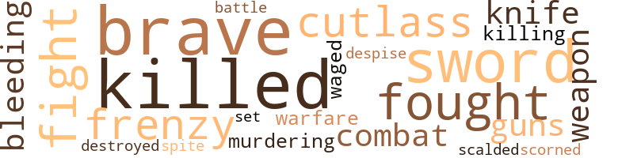
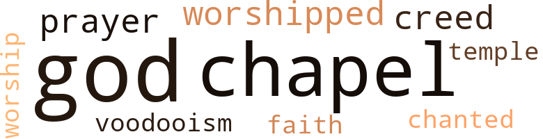

Sign of Keloa (The), by Wilson, Pat (1961)
12 music-related terms matched in this text.
Most frequent terms in this topic: sang (3); songs (2); song (1); chanted (1); instruments (1)
guitar.n.01
Definition: a stringed instrument usually having six strings; played by strumming or plucking
| word | sentence |
|---|---|
| guitar | The sound of a guitar , touched by the hand of a swain , could be heard as he strummed a love song . |
music.n.01
Definition: an artistic form of auditory communication incorporating instrumental or vocal tones in a structured and continuous manner
| word | sentence |
|---|---|
| music | He could interpret the full meaning of Egyptian art and music . |
musical_instrument.n.01
Definition: any of various devices or contrivances that can be used to produce musical tones or sounds
| word | sentence |
|---|---|
| instruments | Several times each year the villagers went to a small coastal mis * sion and exchanged ivory pelts and gold for quinine , bandages , instruments and other medical equipment . |
pipe.n.04
Definition: a tubular wind instrument
| word | sentence |
|---|---|
| pipe | The old man lay his whit tling aside and lit his pipe . |
sing.v.02
Definition: produce tones with the voice
| word | sentence |
|---|---|
| sang | He could see the deep blue Mediterranean , as Bettina sang of her beautiful homeland . |
| sang | Bettina sang of the beautiful Vatican City and the Blessed Virgin Mary , for no performance was complete without remembrance of her Roman Catholic faith . |
| sang | The crew sang loudly , as they set the sails and pulled up the anchor . |
singing.n.01
Definition: the act of singing vocal music
| word | sentence |
|---|---|
| singing | Love for this singing child star seeped into the hearts of the English as the tide slowly Hows in from the sea to find its way to the rocks on the shore . |
song.n.01
Definition: a short musical composition with words
| word | sentence |
|---|---|
| songs | The cap tives chanted songs to the little sun god , for they believed that he had avenged them . |
| song | The sound of a guitar , touched by the hand of a swain , could be heard as he strummed a love song . |
| songs | Love songs that had been played through the centuries made him think of his wedding night . |
tone.v.01
Definition: utter monotonously and repetitively and rhythmically
| word | sentence |
|---|---|
| chanted | The cap tives chanted songs to the little sun god , for they believed that he had avenged them . |
35 violence-related terms matched in this text.
Most frequent terms in this topic: brave (4); killed (4); sword (3); fought (2); fight (2)
battle.v.01
Definition: battle or contend against in or as if in a battle
| word | sentence |
|---|---|
| combat | They bought camels , pack horses and other equipment to help them combat the dangers of the jungle . |
| battle | In an efFort to battle the wind , the mast was strained ; it broke with a loud crash . |
bleeding.n.01
Definition: the flow of blood from a ruptured blood vessel
| word | sentence |
|---|---|
| bleeding | When the crewmen entered the hole , they found the old native bleeding and his clothing torn into shreds . |
blister.v.02
Definition: subject to harsh criticism
| word | sentence |
|---|---|
| scalded | Then the entire area turned dark , as though it had been scalded with hot oil . |
contemn.v.01
Definition: look down on with disdain
| word | sentence |
|---|---|
| scorned | who have scorned the high-born women of Egypt , to marry a black Ethiopian . |
| despise | And would his own children despise him ? |
craze.n.02
Definition: state of violent mental agitation
| word | sentence |
|---|---|
| frenzy | When he saw that all his people were in chains , he grabbed a spear in frenzy and advanced toward Barr . |
| frenzy | Running up the stairs in frenzy to meet her , he tore the white blouse from her shoulders , exposing her firm round breasts . |
cutlas.n.01
Definition: a short heavy curved sword with one edge; formerly used by sailors
| word | sentence |
|---|---|
| cutlass | Then he drew from his belt a sharp gleaming cutlass and drove it deep into the chest of the old man . |
| cutlass | Above the hilt of the cutlass , a dark stream of blood flowed from the heart . |
destroy.v.04
Definition: put (an animal) to death
| word | sentence |
|---|---|
| destroyed | " Pirate colonies on the small islands have been destroyed . |
engage.v.07
Definition: carry on (wars, battles, or campaigns)
| word | sentence |
|---|---|
| waged | " Now that these plunderers have been scattered by warfare , waged by the French and English , it is said that large coffers , filled with treasures , are buried on some of the islands in the sea , " the captain concluded . |
fight.v.02
Definition: fight against or resist strongly
| word | sentence |
|---|---|
| fought | But , when attacked by other natives or man - eating beasts , they fought fiercely . |
| fight | Barr knew that these villagers would be hard to fight , but if led by a religious person , they could be easily cajoled from their homes . |
| fight | They became sullen ; they began to quarrel and fight among themselves . |
| fought | Keola set upon them and fought viciously until those who had not been killed had fled in panic from this giant , with hair that flamed and a dark brown scar resembling a claw on his chest . |
gun.n.01
Definition: a weapon that discharges a missile at high velocity (especially from a metal tube or barrel)
| word | sentence |
|---|---|
| guns | Each of them carried guns and whips . |
kill.v.10
Definition: cause the death of, without intention
| word | sentence |
|---|---|
| killed | Few had escaped , although two had been killed in the attempt , and one had eaten poison berries and had expired within a short time . |
| killed | When the last of the captives were being loaded , Zatua was killed in an effort to rescue his father . |
| killed | It made her remember her father before he had been killed by rebels . |
| killing | He had been bound to the mast to keep the others from killing him . |
| killed | Keola set upon them and fought viciously until those who had not been killed had fled in panic from this giant , with hair that flamed and a dark brown scar resembling a claw on his chest . |
knife.n.02
Definition: a weapon with a handle and blade with a sharp point
| word | sentence |
|---|---|
| knife | He could hear the words of the chief tain 's father , as he lay dying from the knife wound , inflicted by his own hands . |
malice.n.01
Definition: feeling a need to see others suffer
| word | sentence |
|---|---|
| spite | " In spite of her cruelty , Keloa loved the beautiful queen . |
murder.v.01
Definition: kill intentionally and with premeditation
| word | sentence |
|---|---|
| murdering | When he was captured and sold as a slave , they stormed the huts of the French and English traders , burn ing , plundering and murdering from time to time . '' |
sic.v.01
Definition: urge to attack someone
| word | sentence |
|---|---|
| set | Keola set upon them and fought viciously until those who had not been killed had fled in panic from this giant , with hair that flamed and a dark brown scar resembling a claw on his chest . |
sword.n.01
Definition: a cutting or thrusting weapon that has a long metal blade and a hilt with a hand guard
| word | sentence |
|---|---|
| sword | His calm hand rested upon the hilt of a gilded sword that had felled many in battle . |
| sword | As the brave warrior lived by the sword , he died by the sword . |
| sword | As the brave warrior lived by the sword , he died by the sword . |
war.n.03
Definition: an active struggle between competing entities
| word | sentence |
|---|---|
| warfare | " Now that these plunderers have been scattered by warfare , waged by the French and English , it is said that large coffers , filled with treasures , are buried on some of the islands in the sea , " the captain concluded . |
weapon.n.01
Definition: any instrument or instrumentality used in fighting or hunting
| word | sentence |
|---|---|
| weapon | The younger man stepped quickly aside and snatched the weapon from his feeble hands . |
weather.v.01
Definition: face and withstand with courage
| word | sentence |
|---|---|
| brave | The warm liquid made the old native brave and Sir Anthony gave him a handful of coins . |
| brave | " Oh , brave warriors , sons of Keloa , the Silent One , the Pope of the Vatican City has sent me to your village to administer the Holy Sacrament , so that your village will be blessed with many strong sons . |
| brave | As the brave warrior lived by the sword , he died by the sword . |
| brave | He knew if ever a fourth legend should be related that he would play the leading role , for the noble blood of his ancestors now mingled with that of Keola , the brave warrior , and would yield a being of unusual quality . |
25 religion-related terms matched in this text.
Most frequent terms in this topic: chapel (6); god (5); gods (3); worshipped (2); creed (2)
chapel.n.01
Definition: a place of worship that has its own altar
| word | sentence |
|---|---|
| chapel | They motioned Sir H.trvey and Barr to follow them into a nude chapel , where the old one thanked the Holy Virgin Mary lor the safe return of their son , Zatua , who had been gone for many moons . |
| chapel | Sir Anthony walked to the small chapel and knelt as though in prayer . |
| chapel | The natives knelt also and remained with bowed heads until Sir Anthony stood and mounted the steps of the chapel . |
| chapel | Wearing spotless white robes , which was the custom taught by the other priests , they assembled before the chapel at twilight . |
| chapel | He even took the golden chalices and candlesticks from the chapel , which had been placed there by an old priest , who had lived for many years in the village . |
| chapel | She knelt , blessed herself , then left the chapel . |
creed.n.01
Definition: any system of principles or beliefs
| word | sentence |
|---|---|
| creed | For in the old Egyptian laws , written by the chieftains many centuries ago , Ongano remembered that to the son is bequeathed the heritage of his father , including his likeness , wealth , name and creed . |
| creed | Then he has the right to inherit his father 's race and creed . |
god.n.03
Definition: a man of such superior qualities that he seems like a deity to other people
| word | sentence |
|---|---|
| gods | These people , so different from the natives he had studied about , were not heathens , who worshipped pagan gods , or signs . |
| god | The village folk called him their little sun god , because when the sun fell on his hair , it looked like a halo of fire on the young lad 's head . |
| god | " It is said that the little sun god can be seen riding on the backs of great fishes in the Mediterranean . |
| gods | When slave traders had other natives on this tribe aboard their ship , it is said that the gods of the sea rocked the ship into bits . |
| god | Rain began to fall in torrents , while deep rumbles of thunder fright ened the captives , as they huddled together in the hole , for they feared Thor , god of thunder , and old Neptune , god of the sea . |
| god | Rain began to fall in torrents , while deep rumbles of thunder fright ened the captives , as they huddled together in the hole , for they feared Thor , god of thunder , and old Neptune , god of the sea . |
| god | The cap tives chanted songs to the little sun god , for they believed that he had avenged them . |
| gods | " On the great day of pagan worship , at the temple of the gods , Queen Cleopatra was giving names to the sons of warriors , who would be future members of her army . |
prayer.n.01
Definition: the act of communicating with a deity (especially as a petition or in adoration or contrition or thanksgiving)
| word | sentence |
|---|---|
| prayer | Sir Anthony walked to the small chapel and knelt as though in prayer . |
prayer.n.04
Definition: a fixed text used in praying
| word | sentence |
|---|---|
| prayer | " Oh , sweet Virgin , why do you not answer my prayer ? " she pleaded . |
religion.n.01
Definition: a strong belief in a supernatural power or powers that control human destiny
| word | sentence |
|---|---|
| faith | Bettina sang of the beautiful Vatican City and the Blessed Virgin Mary , for no performance was complete without remembrance of her Roman Catholic faith . |
temple.n.03
Definition: an edifice devoted to special or exalted purposes
| word | sentence |
|---|---|
| temple | " On the great day of pagan worship , at the temple of the gods , Queen Cleopatra was giving names to the sons of warriors , who would be future members of her army . |
tone.v.01
Definition: utter monotonously and repetitively and rhythmically
| word | sentence |
|---|---|
| chanted | The cap tives chanted songs to the little sun god , for they believed that he had avenged them . |
voodoo.n.03
Definition: a religious cult practiced chiefly in Caribbean countries (especially Haiti); involves witchcraft and animistic deities
| word | sentence |
|---|---|
| voodooism | He could not spend the rest of his life allowing it to be based upon a structure of voodooism and superstition . |
worship.n.01
Definition: the activity of worshipping
| word | sentence |
|---|---|
| worship | " On the great day of pagan worship , at the temple of the gods , Queen Cleopatra was giving names to the sons of warriors , who would be future members of her army . |
worship.v.02
Definition: show devotion to (a deity)
| word | sentence |
|---|---|
| worshipped | These people , so different from the natives he had studied about , were not heathens , who worshipped pagan gods , or signs . |
| worshipped | " Natives from many villages had worshipped the small son . |